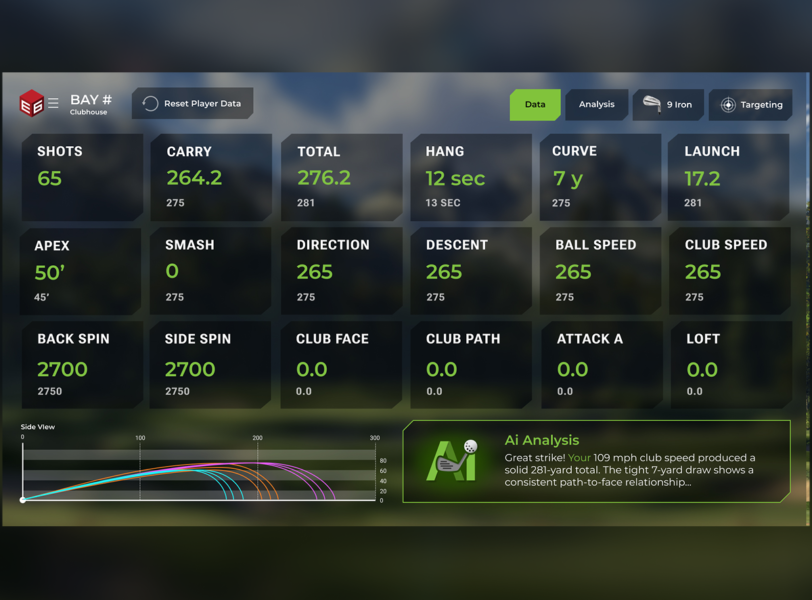

Customizable Design
Work closely with our team to create the perfect set up for your business. Range size, width, and bay count can all be customized to fit your needs.

RANGE
An indoor, simulated range experience that maximizes space and creates an unforgettable customer experience.
Watch Demo ↗RANGE creates a stunning, simulated range experience without the space requirements or ball fetching inconveniences of a traditional range. It represents the next generation of golf.
Work closely with our team to create the perfect set up for your business. Range size, width, and bay count can all be customized to fit your needs.

What a traditional range can’t give your customers. Our user interface provides real-time swing data every time a ball is hit, so improvement happens faster.
Customers can sign into their account, which saves previous range session data, making their experience more cohesive, continuous, and sticky.

Always Open
A range that never closes due to bad weather, darkness, or maintenance. With RANGE, you’re system can always stay up and running, boosting your bottom line.

More Bays. More Options.
Our biggest range option allows 7 players to practice in their individual bays at once. Each sees their own ball flight and corresponding data every single swing.
What Golfers Say
★★★★★
We Have 5 TruGolf Commercial Simulators in our Facility. They have been the best as far as accuracy, built to last, and user-friendly to keep people playing. The Customer service has been extremely easy to work with every question is answered promptly, preventing us from ever having any downtime!
Fore Seasons
★★★★★
After 10 seasons at WI Indoor Golf Center, I have purchased almost every different brand of high end commercial simulators. TruGolf offers the most courses, the best software with E6 CONNECT and most of all the BEST technical support in the market. If you’re looking for either a home simulator or planning to open a commercial golf center, check out TruGolf first.
Chris Verhoff, Wisconsin Indoor Golf Center
A Range with Range
RANGE BY TRUGOLF
Connect with a member of the TruGolf Team to get started on your journey to better golf. Fill out this form or call 385-297-9983.